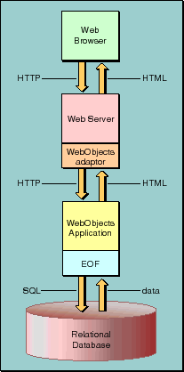
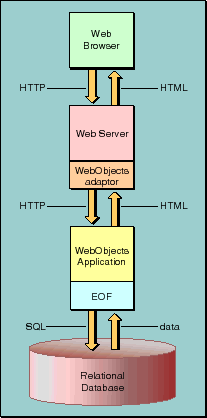

 Figure 4. Chain of Communication Between the Browser and an HTML-based WebObjects Application Here is a brief description of these processes:

Figure 4. Chain of Communication Between the Browser and an HTML-based WebObjects Application
Table of Contents Next Section
 Table of Contents
Table of Contents  Next Section
Table of Contents
Next Section
Table of Contents  Previous Section
Table of Contents Next Section
Previous Section
Table of Contents Next Section